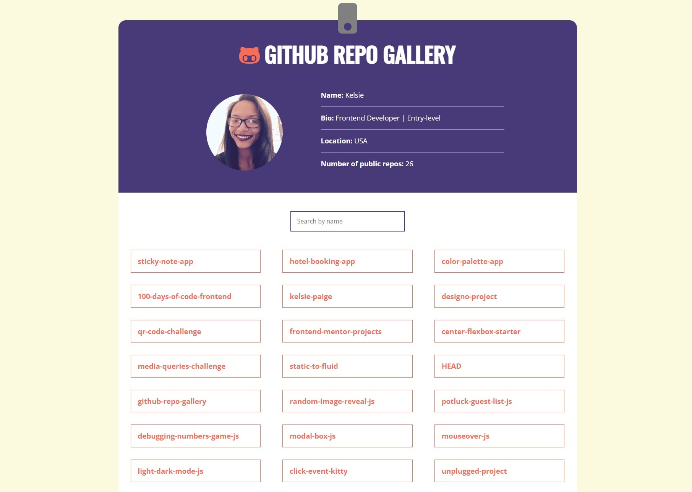

I love creating and finding solutions. I'm dedicated to sef-development and life
long
learning . When I'm not crafting web magic , you can find me playing Stardew
Valley
or relaxing with my two cats .
Projects
Guess The Word Game
Players guess the word by entering one letter at a time. If the player guesses all the letters
correctly before they use up their allotted guesses, they win!
JavaScriptREST API
Sticky Notes App
An interactive app that lets users create, edit, filter, and delete “sticky notes” on their computer
to keep track of to-do items.
React
Unplugged
A 3-page responsive website adaptable to mobile, tablet, and desktop screens built from a design comp
with a Mobile First approach.
HTMLCSSResponsive Layout

GitHub Repo Gallery
Pulls data from the GitHub API to create a gallery of repos for visitors to see profile information,
a list of each repo, and the ability to search for a specific repo.
JavaScriptGitHub API
Skills
Tools
Chrome DevTools
Visual Studio Code
Git
GitHub
Figma
Photoshop
Hi, there! I'm Kelsie.
I have always been captivated by the process of problem-solving, and I am grateful to have found a
career that allows me to utilize this skill with a creative twist. Frontend development presents me
with a unique set of challenges that constantly push me to think creatively and come up with
innovative solutions.
One of the things that truly fuels my passion for frontend development is the constant opportunity
for self-development and learning. In this rapidly evolving industry, there is always something new
to discover and master. I embrace this aspect wholeheartedly, as it motivates me to stay curious,
stay up-to-date with the latest technologies, and continuously enhance my skills.
 . I'm dedicated to sef-development
. I'm dedicated to sef-development  and life
long
learning
and life
long
learning  . When I'm not crafting web magic
. When I'm not crafting web magic  , you can find me playing Stardew
Valley
, you can find me playing Stardew
Valley
 or relaxing with my two cats
or relaxing with my two cats  .
.